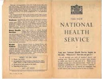
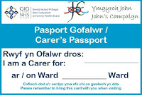
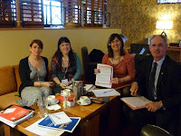

{kind=link}
It is there to improve our health and
wellbeing, supporting us to keep mentally and physically well, to get better
when we are ill and, when we cannot fully recover, to stay as well as we can to
the end of our lives. It works at the limits of science – bringing the highest
levels of human knowledge and skill to save lives and improve health. It
touches our lives at times of basic human need, when care and compassion are
what matter most.”
Try reading this passage aloud. To my ears the rhythm and the phrasing achieve an almost prayerful quality: to stay as well as we can to the ends of our lives. This is the introduction to the most recent revision of the NHS Constitution and, while I’m not advocating the NHS designed-to-be-read-as-literature I’d be glad if you left this blog and went there now. I think we need to remind ourselves of the beauty of the concept.
The NHS belongs to the people but this expression of vision only applies to England. All four UK countries are committed to a publicly funded health care system but as part of the processes of devolution, each NHS system operates independently and is accountable to its own government. Scotland has a Patient Charter of Rights and
Responsibilities which has been incorporated into an Act by the Scottish
Parliament (2011). Wales has a Patients Charter which was most recently revised in 2005. Health
and Social Care Northern Ireland also has a Patients Charter and revision has
been mentioned but not, I think, implemented. In England, the NHS Constitution must
by law be updated every ten years, with involvement by patients, public and
staff and is supplemented by a handbook which is updated every three years. What you are reading here is the latest edition, published October 2015.
{kind=link}

Just in case readers in England are tempted to feel smug about this (what us, smug?) there is a viable argument that the structurally fragmented state of the English NHS (resulting from the Health and Social Care Act 2012) means that it is England where the NHS is in the greatest state of flux and where it is therefore crucial that we, as citizens, understand our ownership.
The NHS Constitution exists to empower patients and their families by providing them with up to date information about their legal rights but I am not advocating it as an aid to complaint, necessary though that may sometimes be. I want us to read this document as something encouraging, supportive, energising. Writers and readers know that meaning is something that is made by both sides. I wish that reading this Constitution would help to break down the them-and-us feeling that can exist between staff and patients with their families and carers. After all it's a rare NHS staff member who will go through his or her life without also being an NHS patient. One in three of all of us will also, at some time in our lives, be a carer. The NHS belongs to all of us.
The NHS Constitution sets out seven key principles with
their underpinning values. It tells us we have legal rights and makes pledges
to us which go above and beyond legal rights.
 |
| A Welsh Carer's Passport |
{kind=link}
It’s worth pausing for a moment and reflecting on what this
right of appropriateness might mean, if, for instance, you are someone living
with dementia. Or if you are any frail or vulnerable person who is normally
dependent on someone else for their daily functioning. Perhaps you have a learning disability? What would most
appropriately meet your needs and reflect your preferences if you required
hospital treatment? Being accompanied, I would guess, by someone you already know and trust. The Constitution pledges to
make the transition as smooth as possible when you are referred between
services and to put you, your family and carers at the centre of decisions that
affect you or them.
| Karen Wilson, the first nurse in Scotland to sign her ward up to John's Campaign |
{kind=link}
So the next time a loving daughter is turned away from her “very poorly” father with dementia because it’s not visiting hours or when she is obstructed from making an appointment to talk to the clinicians who are looking after him at a time that is convenient for her to continue with her own socially vital job, she should remind the nay-sayers of Principle Four.
 |
| The "Dementia Together" team who are pledged to introduced John's Campaign to Northern Ireland |
{kind=link}
We won't therefore be putting in for PLR but we are as keen as any authors that the NHS Constitution should find readers. Currently only 24% of patients know it exists -- and many are reported as finding it "pretty meaningless" (Patient's Association report, July 2012).
| Nurses at St Helen's & Knowsley NHS Trust, the most recent group to join John's Campaign |
{kind=link}